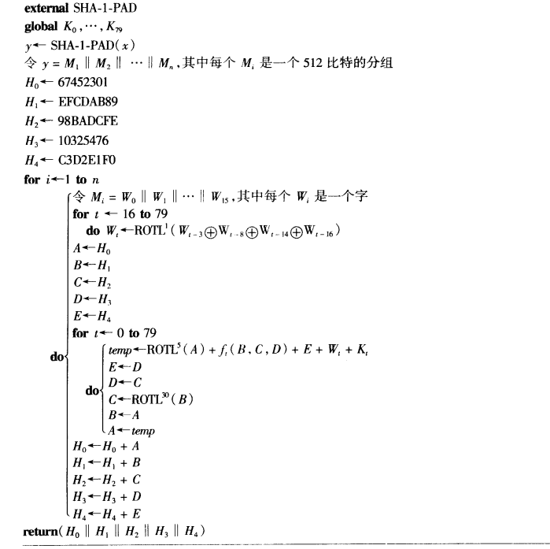

古典密码学
几种古典密码
移位密码（K=3即为凯撒密码）
代换密码
仿射密码
维吉尼亚密码
希尔密码
置换密码
流密码
自动秘钥密码
密码分析
常见攻击类型：
- 唯密文攻击
- 已知明文攻击
- 选择明文攻击：有加密机访问权限
- 选择密文攻击：有解密机访问权限
统计分析：
根据字母出现的频率（或者结合二元组出现频率）
维吉尼亚密码的分析：
Kasiski测试法，搜索长度至少为3的相同密文段，记录这些密文段到起始点之间的距离，猜测m为这些距离的最大公因子的因子
重合指数法，随机两个字母相等的概率（称为重合指数）为0.038，如果相隔为m，这个概率提高到0.065
希尔密码的分析：
需要至少m个不同的明-密文对
Shannon理论
1949年Claude Shannon发表的”Communication Theory of Secrecy Systems”
- 计算安全性：度量破解所做的计算
- 可证明安全性：归入数学难题
- 无条件安全性
完善保密性定义为对任意明文x，密文y，有$P(x|y)=P(x)$
定义：密文空间C、明文空间P、密钥空间K
定理：如果密码体制满足|K|=|C|=|P|。那么这个密码体制是完善保密的，当且仅当每个密钥被使用的概率为1/|K|，且对$x\in P$，$y\in C$，存在唯一的密钥K，$e_K(x)=y$。
一个著名的完善保密的密码体制是”一次一密“，$P=C=K=(Z_2)^n$，加密和解密都是取异或。但是这个体制要求用n比特的密钥加密n比特的明文，且对已知明文攻击是脆弱的。
由于以概率$2^{-n}$发生的事件可以编码为长度为n的比特串，因此定义随机变量X的熵为
Huffman算法找到了使得加权平均编码长度最小的单射编码l，他是无前缀的，并且
熵的性质
- $H(X)\leq log(n)$
- $H(X,Y)\leq H(X)+H(Y)$，(X、Y独立时取等号)
- $H(X,Y)=H(Y)+H(X|Y)$
- $H(X|Y)\leq H(X)$
定义条件熵H(K|C)为密钥含糊度。那么
($H(K|C)=H(K,C)-H(C)=H(K,P,C)-H(C)=H(K,P)-H(C)=H(K)+H(P)-H(C)$)
自然语言L的熵定义为
语言L的冗余度定义为
英语中$H(P)=4.19$，$H(P^2)/2=3.90$，$1.0\leq H_L\leq 1.5$
定理：|C|=|P|且密钥是等概率选取的，那么给定长为n的密文串，伪密钥的期望数满足
($\bar{s_n}=\sum P(y)|K(y)|-1$，而$H(K|C)=H(K)+H(P^n)-H(C^n)\geq H(K)-nR_Llog_2|P|$)
定义唯一解距离为使得伪密钥期望等于0的n，记为$n_0$。这是给定足够时间下，分析者能唯一计算出密钥所需密文的平均量。
乘积密码体制密钥$K=(K_1,K_2)$，定义加密解密如下
如果密码体制不是幂等的，那么多次迭代有可能提高安全性。
分组密码和高级加密标准
大多数分组密码都是乘积密码：用K来生成$N_r$个轮密钥（也叫子密钥），轮密钥的列表就是密钥编排方案。通过这些轮密钥依次进行加密。
代换-置换网络（SPN）
均为置换，设$P=C=\{0,1\}^{lm}$，$K\subset(\{0,1\}^{lm})^{N_r+1}$是由K生成的密钥编排方案的集合。
每轮加密先用异或操作混入该轮密钥，再用$\pi_s$进行m次代换，再用$\pi_p$进行一次置换。（最后一轮只做异或操作）
线性密码分析
取值01的随机变量$P(X_i=1)=p_i$，定义偏差$e_i=p_i-1$
堆积引理：独立随机变量$X_i$，那么随机变量$X_1\oplus X_2\oplus … \oplus X_n$的偏差满足
对于一个置换$\pi_s:\{0,1\}^4\to\{0,1\}^4$，把每个相关的随机变量表示成如下形式
设$N_L(a,b)$表示满足如下条件的8元组对(a,b),(x,y)的个数
该随机变量的偏差$e(a,b)=(N_L(a,b)-8)/16$
一个基于偏差为$e$的线性逼近的线性攻击想要成功所需要的的明-密文对数$T\approx ce^{-2}$
差分分析
定义$\Delta(x’)=\{(x,x^*|x\oplus x^*=x’\}$，则显然这个集合大小为$2^m$
定义
由此定义对应于差分$(a’,b’)$的扩散率
一个基于扩散率为e的差分攻击，需要4重组$(x,x^*,y,y^*)$的数量$T\approx ce^{-1}$
数据加密标准
DES是一种特殊的迭代密码，叫做Feistel型密码，每个状态$u^i$被分成长度相同的两部分$L^i$和$R^i$，轮函数g有如下形式
显然Feistel型轮函数是可逆的，所以f不需要满足单射条件。
DES是16轮Feistel型密码，分组长度为64，密钥空间为$2^56$。
1998年56小时找到了DES密钥
高级加密标准
AES要求具有分组长度128，支持128、192、256的密钥长度，轮数依赖于密钥长度
最终Rijndael当选
前N-1轮，用S盒进行一次代换SubBytes，对State做一置换ShiftRows，再对State做一次操作MixColumns，然后进行AddRoundKey。最后一轮不用MixColumns。
目前来看，AES是安全的，不存在快于穷尽密钥搜索的攻击。
工作模式
四种模式
- 密码本（ECB）
- 密码反馈（CFB）：$z_i=e_K(y_{i-1}),\:y_i=x_i\oplus z_i$
- 密码分组连接（CBC）：$y_i=e_K(y_{i-1}\oplus x_i)$
- 输出反馈（OFB）：$z_i=e_K(z_{i-1}),\:y_i=x_i\oplus z_i$
ECB和OFB中，改变一个明文分组不影响其他密文分组，常用于信道不安全的通信，OFB常用于卫星通信。
CBC和CFB模式对于认证是有用的，能产生消息认证码MAC。
Hash函数
Hash函数安全性从三个问题来评估（这三个问题都是难解的才是稳固的）
- 原像
- 第二原像
- 碰撞
随机预言模型：理想的Hash函数，这个模型对x，随机选择Hash函数h，h(x)是完全随机的。
取q个点寻找原像的平均成功率$e=1-(1-1/M)^q$。（也是寻找第二原像的成功率）
取q个点寻找碰撞的成功率为$e=1-P_M^q/M^q$
可以估计$q\approx\sqrt{2Mln(1/(1-e))}$，（这就说明大约$\sqrt{M}$个随机元素计算有50%概率出现碰撞）
解决碰撞问题比原像问题和第二原像问题容易。碰撞问题可以很容易地转变为第二原像问题。任何能解决原像问题且概率为1的算法也能解决碰撞问题。
迭代Hash函数
输入一个比特串x，用公开算法构造串y，使得
处理阶段必须保证x到y是单射（常见的是一个变换+padding）
然后以长度为m的公开初始值作为$z_0$，然后
Merkle-DamgArd结构
如果有抗碰撞的compress函数，则这样的迭代Hash函数也是抗碰撞的。先将x分成长为k-1的部分，得到y
以$g_{k+1}$为密文。
定理4.6：找到h的碰撞，则能找到compress函数的碰撞。（证明考察x长度mod t-1）
安全Hash算法（SHA-1）
要求$|x|\leq 2^{64} - 1$，则$l=|x|$长度最多为64比特
PADDING算法：
其中 |l|=64，padding的d = 447-|x| mod 512。把y分成512比特的分组

其中$f_i$是分组定义的函数，输入是三个字，输出是一个字，$K_i$是分组定义的常数。
之后还有新的Hash函数（SHA-256，SHA-384，SHA-512…）
消息认证码
一个消息的MAC计算为
对于攻击者来说，即使K是保密的，计算上式的值也是简单的事情。
嵌套MAC和HMAC
嵌套MAC是指合成两个带密钥的Hash组建立MAC算法。假定(X,Y,K,G)和(Y,Z,L,H)是Hash族，复合成Hash族$(X,Z,M,G\cdot H)$，其中$M=K\times L$。对所有的x
这个结构中$|Y|\geq |Z|$是有限集，$|X|>|Y|$或者为无限集。如果满足以下两个条件，嵌套MAC是安全的
- 给定固定的密钥，作为MAC，(Y,Z,L,H)是安全的
- 给定固定的密钥，(X,Y,K,G)是碰撞稳定的
直观上讲是通过安全的“小MAC”和碰撞固定的Hash族复合成安全的“大MAC”。考虑三种攻击
- 对嵌套MAC的假冒
- 对小MAC的假冒
- 对Hash族的碰撞-探测
HMAC是一个被提议作为FIPS标准的嵌套MAC算法。密钥记为K，ipad和opad是常数。定义
CBC-MAC
构造MAC的常用方式是基于固定的（公开的）初始化向量的CBC模式。每个密文分组在被K加密之前与下一组明文分组一起异或。
对CBC-MAC最好的通用攻击是碰撞攻击。
攻击细节如下：选择q个独立的、长度为t的比特串，记为$x_1^1,…,x_1^q$，随机选择$x_2^i$，/定义$x_3,…,x_n$是固定比特串，定义
那么如果$h_K(x_i)=h_K(x_j)$，则
那么攻击者定义
并请求v的MAC，这也就是w的MAC。
无条件安全信息认证码
假定一个密钥只产生一个认证表情，即攻击者至多只能进行一次查询
定义
那么
定义强泛Hash函数族，如果对任意$x\neq x’$
定理：强泛(N,M)-Hash函数族的认证码的$pd_0=pd_1=1/M$。
显然，(N,M)-Hash函数族(X,Y,K,H)对任意指定x，存在y，使得
对每个(x,y)和x’，存在一个y’使得
故$pd_1\geq 1/M$，取等号的充要条件就是该Hash函数族是强泛的。
RSA密码体系和整数因子分解
公钥密码体系无法提供无条件安全性，因此我们只研究其计算安全性。
Euclidean算法
先计算r=gcd(a,b)，然后得到sa+tb=r，那么$b^{-1}=t\mod a$
中国剩余定理
定义$M_i=M/m_i$，那么
其中$y_i=M_i^{-1}\mod m_i$
Langrange
n阶乘法群G的元素的阶整除n
Fermat
素数p，$b^p=b\mod p$
Euler准则
奇素数p，正整数a，那么a是模p的二次剩余当且仅当
RSA密码体系
n=pq，p,q为素数
定义
n和b是公钥，p、q、a是私钥。
素性检测
素数个数定理：小于等于N的素数个数$\pi(N)\approx N/ln(n)$
判定问题的随机算法
Monte Carlo算法总是给出一个回答，但不一定正确。偏是的Monte Carlo算法的“是”回答总是正确，“否”也许是不正确的。
Solovay-Strassen是对于合数问题一个偏是的Monte Carlo算法，具有错误概率1/2。
称n为对于基底a的伪素数，如果$(a/n)=a^{(n-1)/2}\mod n$。可以证明，n对至多1/2的a为伪素数。
Solovay计算x=(a/n)（利用二次互反律等），如果x=0则为合数，否则判断$x=a^{(n-1)/2}$。
Miller-Rabin算法是另一个合数问题的算法，也是偏是的，错误概率至多为1/4。
把n-1写成$2^km$，随机选取整数a，$1\leq a\leq n-1$，
如果b=1，则n为素数，否则对重复k次
每次如果b = -1，则n为素数。最后n为合数。
模n的平方根
假定
那么同余方程
当$(a/p_i)=1$对所有i成立时有$2^l$个解，其他情形下没有解。
分解因子算法
攻击RSA密码最明显的方式就是试图分解公开模数。对于大整数最有效的三种算法是
- 二次筛法
- 椭圆曲线分解算法
- 数域筛法
其他先驱的著名算法有Pollard的$\rho$方法和p-1算法，William的p+1算法、连分式算法、试除法等等。
Pollard p-1算法
a=2
for j = 2 to B do
$a=a^j\mod n$，计算a-1和n的最大公约数，如果都找不到则认定为素数。
合理性：n的素因子p，假定对每个素数$q|(p-1)$，q<B，则有$(p-1)|B!$，此时$2^{B!}=1\mod p$
一个缺陷是B的选择，另一个缺陷是对q的要求，所以可以选择p=2p+1这样的安全素数
Pollard $\rho$算法
选择随机子集X，对不同的x1,x2，计算gcd(x1-x2, n)。这个方法成功当且仅当x mod p出现碰撞。当
时，50%的概率至少有一个碰撞。但这种方法需要计算很多次gcd，因此考虑定义整系数多项式f，例如$f(x)=x^2+a$，考察序列
那么如果$x_i=x_j\mod p$，那么$x_{i+d}=x_{j+d}\mod p$，那么图构成1~i的尾巴，和i~j的圈。因此我们取j=2i来寻找碰撞。
Dixon随机平方算法
假设找到$x^2=y^2\mod n$，且$x\neq \pm y\mod n$，那么
因此gcd(x+y, n)是n的一个非平凡因子。
随机平方算法使用因子基B（b个最小素数的集合），找到几个整数z，使得$z^2\mod n$的所有素因子在B里，然后将这些z相乘使得B里素数都出现偶数次，由此导出一个期望的同余方程。
一些技巧是选取形如$j+[\sqrt{kn}]$的整数，因为这样平方和模n比较小， 有可能在B上完全分解。
称n是m-光滑的，如果n的任一素因子都小于等于m，$\phi(n,m)$定义为小于等于n且是m-光滑的正整数个数，如果$n>>m$
基B包含所有小于m的素数，约有b=m/ln(m)个，为了使算法成功，期望找到b个m光滑整数，测试$bu^u$个整数。通常期望运行时间
Pomerance二次筛法
椭圆曲线算法
数域筛法
对RSA的其他攻击
计算$\phi(n)$
可以看到这不比分解n简单。得到$\phi(n)$之后，构造关于p的二次方程即可
解密指数
如果解密指数a已知，那么n可以通过一个随机算法在多项式时间内分解。
可以有算法达到1/2的成功率
Wiener低解密指数攻击
假设前提
满足这个前提的a可以使得解密时间减少75%
已知
假设
考虑到$t<a<n^{1/4}$那么
因此t/a是b/n的近似，从连分数理论可知这样的近似是b/n连分数展开的收敛子。可以通过验证前几个收敛子判断。
Rabin密码体制
假定n=pq不能被分解，则这类体制对明文攻击是计算安全的
设n=pq，p,q为素数，定义
一个明显的问题是加密不是单射。
解密可以约化到n的分解
Rabin Oracle Factoring(n)
选择$y=r^2\mod n$，计算$x=Rabin\:Decrypt(y)$，如果$x\neq\pm r\mod n$，那么$p=gcd(x+r,n)$。
RSA语义安全
half(y)：判断y的明文和n/2的大小关系
parity(y)：判断y的明文二进制最后一位
RSA解密可以约化为half(y)/parity(y) 【二分查找】
语义安全的公钥密码体制
正整数m,k，F为一族陷门单向置换，对任意$f\in F$，有$f:\{0,1\}^k\to\{0,1\}^k$，随机预言$G:\{0,1\}^k\to\{0,1\}^m$，随机选取$r\in\{0,1\}^k$，定义
f和G是公钥，$f^{-1}$是私钥。
主要缺点是数据扩张，将m加密成m+k
假定存在一个算法Distinguish可以对两个明文x1,x2求解密文识别问题，且是完善的（正确概率为$1/2+\epsilon$），我们可以构造新算法Invert以不为0的概率对y求逆。
用SimG代替随机预言G
SimG维护RList、GList。RList记录Distinguish询问的所有输入r，GList为对应的响应
如果r已经询问过，那么用已定义的值g。
如果有$f(r)=y$，那么随机选择j，$g=y_2\oplus x_j$。否则随机选择g
那么可以证明得到$x=f^{-1}(y)$的概率大于等于$\epsilon$。
更有效的非对称密码体制
m<k，$k_0=k-m$，F为一族陷门单向置换，对任意$f\in F$，有$f:\{0,1\}^k\to\{0,1\}^k$，随机预言$G:\{0,1\}^{k_0}\to\{0,1\}^m$，$H:\{0,1\}^m\to\{0,1\}^{k_0}$，随机选取$r_0\in\{0,1\}^m$。
进一步定义
$f,G,H$为公钥，$f^{-1}$为私钥
离散对数问题的公钥密码体制
离散对数
对乘法群$(G,·)$,一个n阶元素$\alpha$，$\beta\in<\alpha>$，找到a
记a为$log_\alpha\beta$
ElGamal密码体制
设p是素数，$Z_p$上的离散对数问题是案处理的，$\alpha$是一个本原元
$p,\alpha,\beta$是公钥，a是私钥。
定义
定义
离散对数问题的算法
Shanks算法
m=$[\sqrt{n}]$，对$0\leq j\leq m-1$，计算$\alpha^{mj}$。
对m个有序对$(j,\alpha^{mj})$按照第二个坐标排序，得到列表L1。
对$0\leq i\leq m-1$，计算$\beta\alpha^{-i}$
对m个有序对$(i,\beta\alpha^{-i})$关于第二个坐标排序，得到列表L2>
找到具有相同第二坐标的对，令a=mj+i
Pollard $\rho$离散对数算法
定义大致相等的划分$S_1,S_2,S_3$，定义函数f
这样产生的每个三元组都满足$x=\alpha^a\beta^b$
比较三元组，知道发现$x_{2i}=x_i$，这时有
所以
Pohlig-Hellman算法
假设
把a表示为
依次确定$a_0,a_1,…$（利用$\beta^{n/q}=\alpha^{a_0n/q}$）
然后用中国剩余定理。
指数演算法
取B个小素数作为基，构造C>B个模p的同余方程（要保证所有因子在B里）
然后选择随机数s，使得
可以在B上分解，那么就容易得到答案。
通用性算法复杂性的下界是$\sqrt{n}$，（这是可以证明的）
有限域
ElGamal密码体制可以咋任何离散对数问题难处理的群中实现
- 有限域$F_{p^n}$的乘法群
- 定义在有限域上的椭圆曲线群
$Z_p[x]/(f(x))$是域当且仅当$f(x)$是不可约的
$F_{2^n}$上离散对数问题当前被认为是计算不可行的
椭圆曲线
二元方程解的集合
满足$4a^2+27b^3\neq 0$的方程
的解加上无穷远点O。
定义二元运算，对$P,Q\in E$，L是通过PQ的直线，交E于第三点$R’$，对x轴作反射得到R，定义
显然若P、Q是实数，则R也是实数。
可以解得
进一步定义模素数的椭圆曲线
同样有无穷远点O。
加法群的定义是相似的。
定理：定义在$Z_p$上的椭圆曲线E，则存在正整数$n_1,n_2$，使得$(E,+)$同构于$Z_{n_1}\times Z_{n_2}$，并且有$n_2|n_1$和$n_2|p-1$。
有一类弱椭圆曲线（“trace one”）是易解的。具有大约$2^{160}$个元素循环子群的椭圆曲线是安全的。
点压缩和ECIES
实际中，椭圆曲线的实现有大约4倍的扩张因子。更为严重的问题是，没有方便的方法确定生成E上的点。
由于确定了x，y的两个值是相反数，一个是奇数，另一个是偶数，因此点压缩技术可以通过判断y mod 2来确定y。
ECIES利用点压缩技术，有一个近似2的信息扩张。
计算椭圆曲线上点的乘积—对倍数c转换为二进制，利用2倍-和差法计算
椭圆曲线加密有得到越来越广泛的应用
ElGamal体制的安全性
比特安全性：确定对数表示二进制的第i个最低比特
最低位是容易的（利用二次剩余）
如果$\beta$是二次剩余，那么$\beta$模p的两个平方根为$\pm\beta^{(p+1)/4}$，且这两个数的最低位不同。那么，我们利用ORACLEL2（假设有这种算法）计算最低第二位，进行判断。
利用此方法可以从最低位开始依次计算。
签名方案
签名算法（私有）+验证算法（公开）
RSA签名方案
利用RSA解密规则进行签名
定义
以及
但是任何人都能随机生成y来伪造RSA签名，阻止这种攻击的方法是让消息足够冗余，使得x有意义的概率非常小。
签名和Hash函数常常结合使用。通过Hash生成信息摘要，再对摘要进行签名。有三种攻击
- 已知消息攻击的存在性伪造：Hash二次原像稳固可以避免
- 选择消息攻击的存在性伪造：Hash碰撞稳固可以避免
- 惟密钥攻击的存在性伪造：Hash原相稳固可以避免
所以签名+Hash不减弱签名的安全性。
ElGamal签名方案
非确定性：有许多有效的签名
难解的离散对数
定义
需要注意随机值k不能泄露，否则计算a很容易。
另外，对两个不同的消息签名使用相同的k，可以计算得到$d=gcd(\delta_1-\delta_2,p-1)$个候选的k进行验证。
一些变体
Schnorr签名方案（缩短了签名）
素数p,q满足$p-1\equiv 0\mod q$。一般取$p\approx 2^{1024}$，$q\approx 2^{160}$。定义Hash函数$h:\{0,1\}^n\to Z_q$
数字签名算法（DSA）
特点：消息是经过Hash缩短的，所以我们会得到比较短的消息摘要
和Schnorr签名一样，使用了一个q元子群。
把ElGammal签名中$\delta$中的减号改为加号。
验证
椭圆曲线DSA（ECDSA）
具有更高的安全性
A是E上阶数为q的一个点，p、q、E、A、B是公钥，m是私钥，$B=mA$
验证
可证明的安全签名方案
可以证明破解概率的方案
一次签名
Lamport签名方案：$f:Y\to Z$单向，y是私钥，z公开
全域Hash
单向陷门f，随机函数G
不可否认的签名
验证签名需要签名者的合作
Chaum-van Antwerpen
p=2q+1，q是素数，$\beta=\alpha^a\mod p$
验证者随机选择$e_1,e_2$，计算$c=y_1^{e_1}\beta^{e_2}\mod p$。
签名者计算$d=c^{a^{-1}\mod q}\mod p$，当且仅当$d=x^{e_1}\alpha^{e_2}\mod p$时是合法的签名。
把y当成合法签名接受的概率为1/q
否认协议
验证者选择$e_1,e_2$，得到d不合法，然后再次选择$e_1’,e_2’$，得到$d’$，当
时，可以推断签名是伪造的。
伪造否认协议成功的概率为1/q
fail-stop签名
van Heyst-Pedersen
p=2q+1，q是素数，
$p,q,\alpha,\beta$是公开且不变的。
$\gamma_1,\gamma_2$是公钥，$a_1,a_2,b_1,b_2$是私钥
签名
验证
定义：如果$\gamma_1=\gamma_1’$，$\gamma_2=\gamma_2’$，那么密钥称为等价的
引理：K和K‘等价，那么$ver_K(x,y)=ver_{K’}(x,y)$
引理：恰好有q个等价的密钥K，$sig_K(x)=y$
引理：至多有一个等价密钥K’，使得$ver_{K’}(x,y)=ver_{K’}(x’,y’)=true$
定理：$sig_K(x)=y$，那么伪造者能计算出$sig_K(x’)$的概率为1/q
这是一个一次签名方案
246